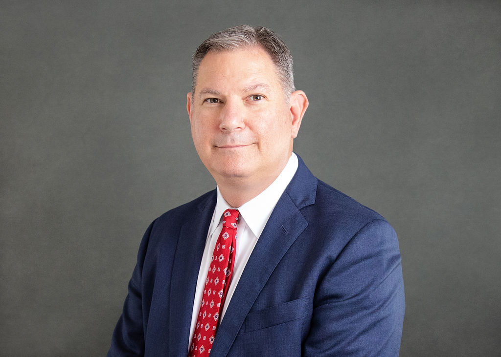

01
Insurance Fraud & Recovery
Counsel for insurance companies and other businesses seeking legal remedies for losses connected to fraud.
Insurance fraud litigationAttorney Profile / Kennedy Vuernick
Richard Vuernick’s practice centers on fraud-related litigation, False Claims Act matters and internal investigations. His work draws on experience in consumer advocacy, public enforcement and private practice.

Investigation informed by public and private practice
Richard Vuernick began his legal career in Washington, D.C., as a consumer advocate with Citizen Action. As Legal Policy Director, he testified before Congress and federal administrative agencies concerning the consumer effects of legislation and regulations.
After returning to New Jersey, he served as a Deputy Attorney General in the New Jersey Office of Insurance Fraud Prosecutor, investigating and prosecuting insurance-fraud and organized-crime matters from their inception through trial.
In private practice, he has represented businesses and individuals pursuing remedies against fraud, litigated for corporate and individual whistleblowers under federal and state False Claims Acts, and conducted internal investigations into potential misconduct.
Practice focus
These pathways reflect practice descriptions currently published on Richard’s firm profile and remain subject to attorney review.
01
Counsel for insurance companies and other businesses seeking legal remedies for losses connected to fraud.
Insurance fraud litigation02
Representation involving corporate and individual whistleblowers with information concerning government-contractor fraud.
False Claims Act litigation03
Internal reviews concerning potential misconduct, with practical guidance for governing bodies of public and private organizations.
Internal investigationsCredentials
Admissions language is carried from the firm’s current public profile and should receive attorney confirmation before production publication.
Published profile record
Items below are reproduced from Richard’s current public firm profile without adding outcomes or unverified descriptions.
Start a conversation
Contact Kennedy Vuernick with a high-level overview. The firm can then determine whether a conversation is appropriate.
Submitting an inquiry does not create an attorney-client relationship. Do not send confidential information until representation is confirmed.